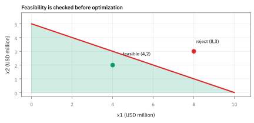
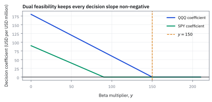

5.4 Independence
สองตัวแปรอิสระกันเมื่อการรู้ค่าของตัวหนึ่งไม่เปลี่ยนการแจกแจงของอีกตัวเลย ซึ่งเท่ากับว่าโอกาสร่วมทุกช่องเป็นผลคูณของ marginal
ทีมความเสี่ยงอยากรู้ว่าวันแย่ ๆ ที่หุ้นใหญ่สองตัวร่วงพร้อมกันเกิดบ่อยแค่ไหน หุ้นสองตัวนั้นคือ AAPL (หุ้น Apple) กับ MSFT (หุ้น Microsoft) ทีมมีตารางโอกาสร่วม (สมมติ) ชุดเดียวกับหน้าก่อน ๆ ตารางนี้บอกว่าแต่ละคู่ของ “AAPL ทำอะไร” กับ “MSFT ทำอะไร” เกิดบ่อยแค่ไหนในหนึ่งวัน
ของที่รู้จากตาราง:
- โอกาสที่ AAPL ลง 2% ในหนึ่งวัน คือ 0.20
- โอกาสที่ MSFT ลงในหนึ่งวัน คือ 0.40
- โอกาสที่สองอย่างนี้เกิดในวันเดียวกัน อ่านจากช่องในตารางได้ 0.15
รายงานความเสี่ยงฉบับหนึ่งไม่ได้อ่านช่องนั้น แต่สมมติว่าสองหุ้น “อิสระกัน” คือรู้ว่า MSFT ขึ้นหรือลงแล้วก็ไม่ได้ช่วยเดาอะไรเรื่อง AAPL เลย ภายใต้สมมติฐานนี้ โอกาสที่สองเรื่องเกิดพร้อมกันคือผลคูณของโอกาสรายตัว รายงานจึงได้ $0.20\times0.40=0.08$
รายงานประเมินวันเลวร้ายนี้ต่ำไปกี่เท่า และถ้าจะยืนยันว่าตารางหนึ่งอิสระจริง ต้องตรวจกี่ช่อง
ลองตอบก่อนเปิดเฉลย
ต่ำไป $0.15/0.08=1.875$ เท่า หรือเกือบสองเท่า
ส่วนคำถามที่สอง ช่องเดียวที่ไม่ตรงกับผลคูณก็พอจะบอกว่าไม่อิสระ แต่การยืนยันว่าอิสระต้องให้ทุกช่องเท่ากับผลคูณของผลรวมแถวกับผลรวมคอลัมน์ (เรียกผลรวมเหล่านี้ว่าขอบตาราง) ตารางนี้มี 3 แถว (AAPL −2%, 0%, +2%) และ 2 คอลัมน์ (MSFT ขึ้น, ลง) ถ้ารู้ขอบตารางแล้ว ตรวจแค่ช่องที่ไม่อยู่ในแถวสุดท้ายและไม่อยู่ในคอลัมน์สุดท้ายก็พอ ซึ่งมี $(3-1)\times(2-1)=2$ ช่อง เพราะช่องที่เหลือหาได้จากการเอาขอบตารางลบช่องที่ตรวจแล้ว จึงผ่านตามไปเอง
ภาพรวมก่อนลงสูตร
หน้า conditional distribution พบว่า ในวันที่ MSFT ลง AAPL ก็มีแนวโน้มลงมากกว่าปกติ นั่นคือการรู้เรื่อง MSFT ทำให้เราเดาเรื่อง AAPL ได้ดีขึ้น หน้านี้ดูกรณีตรงข้าม คือการรู้ค่าของตัวหนึ่งไม่เปลี่ยนอะไรเลยกับการแจกแจงของอีกตัว ไม่ว่าจะรู้ค่าไหน กรณีนี้เรียกว่าความเป็นอิสระ (independence)
ทำไมทุกคนอยากให้ตัวแปรอิสระกัน เพราะถ้าอิสระ โอกาสที่สองเรื่องเกิดพร้อมกันก็แค่เอาโอกาสรายตัวมาคูณกัน ไม่ต้องเก็บข้อมูลร่วมเลย ทางลัดนี้สะดวกมาก แต่ถ้าใช้ผิดที่ ตัวเลขความเสี่ยงจะต่ำกว่าจริงอย่างเงียบ ๆ ดังที่เห็นในโจทย์ด้านบน
รูปด้านล่างเป็น mosaic plot คือภาพที่ใช้พื้นที่แทนโอกาส อ่านแบบนี้:
- แต่ละคอลัมน์คือ MSFT ขึ้นหรือลง ความกว้างของคอลัมน์คือโอกาสของ MSFT แบบนั้น (ขึ้น 0.6 ลง 0.4)
- ภายในคอลัมน์ ความสูงของแต่ละชิ้นสีคือโอกาสของ AAPL แต่ละค่า ในวันแบบนั้น ของ MSFT
- พื้นที่ของชิ้น เท่ากับความกว้างคูณความสูง จึงเป็นโอกาสร่วม
ฝั่งซ้ายเป็นตารางที่อิสระ เส้นแบ่งแนวนอนต่อกันเป็นเส้นตรงข้ามสองคอลัมน์ เพราะการแจกแจงของ AAPL เหมือนกันไม่ว่า MSFT จะขึ้นหรือลง ฝั่งขวาเป็นตารางข้อมูลของเรา เส้นแบ่งกระโดดขึ้นลง เพราะในวันที่ MSFT ลง สัดส่วนวันที่ AAPL ลง 2% มีมากกว่า
หน้านี้เดินทีละขั้น ขั้นแรกตั้งนิยามที่ใช้ได้กับตัวแปรทุกแบบ จากนั้นเอาไปตรวจตาราง และดูว่าทำไมตรวจจุดเดียวไม่พอ ต่อมาตรวจแบบจำลองที่ให้มาเป็นสูตร density ช่วงท้ายแยกความเป็นอิสระออกจากสองเรื่องที่ดูคล้ายกัน คือ correlation เป็นศูนย์ และการอิสระกันทีละคู่
รูป — mosaic ของตารางที่อิสระ เทียบกับข้อมูล
ศัพท์ที่ใช้ในหัวข้อนี้
- Independence (ความเป็นอิสระ)
- สองตัวแปรอิสระกันเมื่อการรู้ค่าของตัวหนึ่งไม่เปลี่ยนการแจกแจงของอีกตัวเลย เขียนเป็นสูตรได้ว่า joint CDF เท่ากับผลคูณของ marginal CDF ทุกคู่เกณฑ์ ผลที่ได้คือโอกาสร่วมคำนวณจากโอกาสรายตัวได้ด้วยการคูณ สมมติฐานนี้อยู่เบื้องหลัง binomial distribution, การบวก variance ของผลตอบแทนหลายวัน และการจำลองแบบ Monte Carlo
- Marginal (การแจกแจงรายตัว)
- การแจกแจงของตัวแปรตัวเดียว โดยไม่สนใจอีกตัว ในตารางคือผลรวมของแต่ละแถวหรือแต่ละคอลัมน์ ซึ่งเขียนไว้ที่ขอบตาราง จึงเรียกผลรวมเหล่านี้ว่าขอบตาราง (ดู marginal distribution)
- Joint CDF
- $F_{X,Y}(x,y)=P(X\le x,\ Y\le y)$ คือโอกาสที่ตัวแรกไม่เกินเกณฑ์ $x$ และตัวที่สองไม่เกินเกณฑ์ $y$ พร้อมกัน ส่วน $F_X(x)=P(X\le x)$ คือ CDF ของตัวเดียว (ดู joint CDF)
- Density และ support
- density $f(x,y)$ คือความหนาแน่นของโอกาสบนระนาบ โอกาสของบริเวณใดคือปริมาตรใต้ $f$ บนบริเวณนั้น support คือบริเวณที่ $f$ มากกว่าศูนย์ หรือพูดง่าย ๆ คือบริเวณที่ค่าของคู่ $(X,Y)$ เกิดขึ้นได้จริง
- Factorization (การแยกเป็นผลคูณ)
- การเขียนตารางโอกาสร่วม (joint PMF), joint CDF หรือ density ให้เป็นผลคูณของฟังก์ชันที่ขึ้นกับตัวแปรเดียว ถ้าเขียนได้ก็อิสระ จึงเป็นวิธีตรวจความเป็นอิสระที่ใช้จริง
- Mosaic plot
- ภาพที่ใช้พื้นที่แทนโอกาส ความกว้างของคอลัมน์คือโอกาสของตัวแปรหนึ่ง ความสูงของชิ้นในคอลัมน์คือโอกาสของอีกตัวในวันแบบนั้น ถ้าเส้นแบ่งต่อกันเป็นเส้นตรงข้ามทุกคอลัมน์ ตารางนั้นอิสระ
- Mutual independence (อิสระร่วม)
- ตัวแปรหลายตัวอิสระร่วมกันเมื่อ joint CDF ของทั้งกลุ่มเท่ากับผลคูณของ CDF รายตัว เงื่อนไขนี้แรงกว่าการอิสระกันทีละคู่ และเป็นสิ่งที่ต้องมีก่อนจะคูณโอกาสของสามตัวขึ้นไป
- Uncorrelated (correlation เป็นศูนย์)
- covariance เป็นศูนย์ แปลว่าเส้นตรงที่ลากผ่านข้อมูลได้ดีที่สุดเป็นเส้นนอน คือไม่มีความสัมพันธ์แบบเส้นตรง แต่อาจมีความสัมพันธ์แบบอื่น จึงอ่อนกว่าความเป็นอิสระมาก พอใช้สำหรับการบวก variance แต่ไม่พอสำหรับการคูณโอกาส
ขั้นที่ 1 — นิยาม: คูณได้ทุกคู่เกณฑ์
ก่อนจะตรวจอะไรได้ ต้องมีนิยามที่ชัดก่อน สำหรับสองเหตุการณ์ คำว่าอิสระแปลว่าโอกาสที่เกิดทั้งคู่เท่ากับผลคูณของโอกาสรายตัว แต่ตัวแปรสุ่มหนึ่งตัวสร้างเหตุการณ์ได้ไม่รู้จบ เช่น “AAPL ลงเกิน 1%” หรือ “AAPL อยู่ระหว่าง 0% ถึง 2%” เราต้องการให้การคูณใช้ได้กับทุกเหตุการณ์แบบนี้
วิธีที่สั้นที่สุดคือเขียนเงื่อนไขผ่าน CDF ให้ $F_{X,Y}(x,y)=P(X\le x,\ Y\le y)$ คือโอกาสที่ $X$ ไม่เกินเกณฑ์ $x$ และ $Y$ ไม่เกินเกณฑ์ $y$ พร้อมกัน และ $F_X(x)=P(X\le x)$ กับ $F_Y(y)=P(Y\le y)$ คือ CDF ของแต่ละตัว ถ้า joint CDF แยกเป็นผลคูณได้ การคูณก็ใช้กับกรอบสี่เหลี่ยม $a\lt X\le b,\ c\lt Y\le d$ ได้ด้วย ดังนี้
นิยามคือ joint CDF ต้องแยกเป็นผลคูณได้ ที่ทุกคู่เกณฑ์ $(x,y)$ ไม่ใช่แค่บางคู่ คำถามที่ควรถามคือ ทำไมเงื่อนไขเรื่องมุมซ้ายล่างแค่นี้จึงพอ คำตอบมาจากกฎสี่มุมของ joint CDF ซึ่งหาโอกาสของกรอบใดก็ได้จาก $F$ สี่ค่า
จังหวะที่ต้องดูคือการแยกตัวประกอบ เมื่อแทน $F$ แต่ละตัวด้วยผลคูณ จะได้สี่พจน์ $F_X(b)F_Y(d)-F_X(a)F_Y(d)-F_X(b)F_Y(c)+F_X(a)F_Y(c)$ ลองกระจาย $\big[F_X(b)-F_X(a)\big]\big[F_Y(d)-F_Y(c)\big]$ ดู จะได้สี่พจน์เดียวกันพอดี ทุกกรอบจึงคูณได้ และบริเวณรูปร่างอื่นก็ประกอบขึ้นจากกรอบเล็ก ๆ หลายกรอบ
นิยามนี้มีอีกหน้าหนึ่งคือ conditional distribution ถ้าอิสระ แล้วเอาแต่ละคอลัมน์ของตารางหารด้วยผลรวมของคอลัมน์นั้น ทุกคอลัมน์จะได้ marginal ของ $X$ เหมือนกันหมด การรู้ $Y$ จึงไม่บอกอะไรเกี่ยวกับ $X$ เลย ไม่ใช่แค่ค่าเฉลี่ยไม่เปลี่ยน แต่ทั้งการแจกแจงไม่เปลี่ยน
ขั้นที่ 2 — ตรวจตารางทีละช่อง
นิยามพร้อมแล้ว ขั้นนี้เอาไปใช้กับตารางจริง เพื่อดูว่าต้องตรวจกี่ช่อง และช่องไหนตรวจแล้วตัดสินได้ทันที
โจทย์ให้อะไรมาบ้าง: ตารางโอกาสร่วม (สมมติ) สองชุดที่มีขอบตารางเท่ากัน
- $X$ คือผลตอบแทนของ AAPL ในวันนั้น เป็น % มีค่า −2, 0 หรือ 2
- คอลัมน์ “ขึ้น” และ “ลง” คือทิศทางของ MSFT ในวันเดียวกัน
- ตาราง A คือข้อมูลชุดเดียวกับหน้า marginal distribution และ conditional distribution
- ตาราง B สร้างขึ้นโดยเอาขอบตารางมาคูณกัน เพื่อเป็นตัวอย่างของตารางที่อิสระ
- คอลัมน์ $p_X$ คือผลรวมของแต่ละแถว เช่น $p_X(-2)=0.05+0.15=0.20$ และแถว $p_Y$ คือผลรวมของแต่ละคอลัมน์ เช่น $p_Y(\text{down})=0.15+0.20+0.05=0.40$
| $X$ | A: ขึ้น | A: ลง | B: ขึ้น | B: ลง | $p_X$ |
|---|---|---|---|---|---|
| −2 | 0.05 | 0.15 | 0.12 | 0.08 | 0.20 |
| 0 | 0.30 | 0.20 | 0.30 | 0.20 | 0.50 |
| 2 | 0.25 | 0.05 | 0.18 | 0.12 | 0.30 |
| $p_Y$ | 0.60 | 0.40 | 0.60 | 0.40 | 1 |
เริ่มจากช่อง “AAPL −2% และ MSFT ลง” ซึ่งเป็นช่องที่รายงานในโจทย์เปิดหน้าคำนวณผิด เทียบผลคูณของขอบกับค่าในตาราง A และ B จากนั้นตรวจอีกสองช่องของตาราง B ในคอลัมน์ขึ้น ($\text{up}$ คือ MSFT ขึ้น และ $\text{down}$ คือ MSFT ลง)
คำตอบ: ตาราง A ไม่อิสระ ช่อง “AAPL −2% และ MSFT ลง” มีโอกาส 0.15 แต่ผลคูณของขอบคือ 0.08 ช่องเดียวที่ไม่ตรงก็พอจะหักล้างแล้ว
ตาราง B อิสระ เราตรวจสองช่องในคอลัมน์ขึ้น คือแถว −2 และแถว 0 ผ่านทั้งคู่ ช่องที่เหลือไม่ต้องตรวจ เพราะขอบตารางบังคับค่าของมัน ตัวอย่างเช่นช่องแถว 2 ในคอลัมน์ขึ้น ต้องเท่ากับผลรวมคอลัมน์ลบสองช่องที่ตรวจแล้ว ซึ่งออกมาเท่ากับผลคูณพอดี
ทั้งคอลัมน์ลงหาได้แบบเดียวกัน คือเอาผลรวมแถวลบช่องในคอลัมน์ขึ้น
ตรวจเองใน 10 วินาที: ถ้าอิสระ การรู้ว่า MSFT ลงต้องไม่เปลี่ยนการแจกแจงของ AAPL ลองเอาคอลัมน์ลงหารด้วยผลรวมคอลัมน์ 0.40 ตาราง B ได้ $0.08/0.40=0.20$, $0.20/0.40=0.50$ และ $0.12/0.40=0.30$ ตรงกับ $p_X$ พอดี ตาราง A ได้ $0.15/0.40=0.375$, $0.20/0.40=0.50$ และ $0.05/0.40=0.125$ ซึ่งไม่ตรง
ขั้นที่ 3 — ผ่านเกณฑ์เดียว ไม่ได้แปลว่าผ่านทั้งหมด
ทีมหนึ่งตรวจความเป็นอิสระแบบประหยัดแรง คือดูแค่จุดเดียว ได้แก่โอกาสที่สองตัวแปรอยู่ที่ค่าต่ำสุดพร้อมกัน แล้วเทียบกับผลคูณ ถ้าตรงกันก็สรุปว่าอิสระ ขั้นนี้สร้างตารางที่ผ่านจุดนั้นแต่ไม่อิสระ เพื่อให้เห็นว่าวิธีนี้หลอกได้
โจทย์ให้อะไรมาบ้าง: ตารางโอกาสร่วม (สมมติ) ของตัวแปร $X$ และ $Y$ ซึ่งแต่ละตัวมีค่า 0, 1 หรือ 2
- $p(i,j)=P(X=i,\ Y=j)$ แถว $i$ คือค่าของ $X$ คอลัมน์ $j$ คือค่าของ $Y$
- ทุกแถวรวมได้ $\tfrac39=\tfrac13$ เช่นแถวแรก $\tfrac{1+2+0}{9}=\tfrac13$ ดังนั้น $X$ เป็น 0, 1 หรือ 2 ด้วยโอกาส $\tfrac13$ เท่ากัน และทุกคอลัมน์ก็รวมได้ $\tfrac13$ เช่นกัน
- CDF จึงเป็น $F_X(0)=F_Y(0)=\tfrac13$ และ $F_Y(1)=\tfrac13+\tfrac13=\tfrac23$
ตรวจสองเกณฑ์ที่อยู่ติดกัน เกณฑ์ $(0,0)$ คือจุดที่ทีมนั้นตรวจ $F(0,0)$ คือช่อง $p(0,0)$ ช่องเดียว ส่วนเกณฑ์ $(0,1)$ รวมสองช่อง คือ $p(0,0)+p(0,1)$
คำตอบ: ไม่อิสระ ที่เกณฑ์ $(0,0)$ ผลคูณตรงพอดี ทีมที่ตรวจจุดเดียวจึงสรุปผิดว่าอิสระ แต่พอขยับเกณฑ์ของ $Y$ ไปที่ 1 ค่าจริงคือ $\tfrac39$ ส่วนผลคูณคือ $\tfrac29$ ไม่เท่ากัน จุดทดสอบหนึ่งจุดจึงเป็นหลักฐานของจุดนั้นจุดเดียว ไม่ใช่ของทั้งตาราง
อีกช่องที่หักล้างได้ทันทีคือช่องกลาง ตารางให้ $p(1,1)=0$ แต่ผลคูณคือ $\tfrac13\times\tfrac13=\tfrac19$
ตรวจเองใน 10 วินาที: ถ้ารู้ว่า $X=1$ ให้ดูแถวกลาง $[2,0,1]/9$ แล้วหารด้วยผลรวมแถว $\tfrac39$ ได้ $Y=0$ ด้วยโอกาส $\tfrac23$, $Y=1$ ด้วยโอกาส 0 และ $Y=2$ ด้วยโอกาส $\tfrac13$ ต่างจาก marginal ที่ให้ $\tfrac13$ ทุกค่า การรู้ $X$ เปลี่ยนการแจกแจงของ $Y$ จึงไม่อิสระ
ขั้นที่ 4 — กรณีมี density: แยกเป็นผลคูณ
ตัวแปรต่อเนื่อง เช่นผลตอบแทนที่เป็นทศนิยมได้ทุกค่า มักให้มาเป็นสูตร density $f_{X,Y}(x,y)$ ไม่ใช่ตาราง density คือความหนาแน่นของโอกาสบนระนาบ และโอกาสของบริเวณใดคือปริมาตรใต้ $f$ บนบริเวณนั้น การตรวจ CDF ทีละคู่เกณฑ์ทำไม่ไหว เพราะเกณฑ์มีไม่รู้จบ ขั้นนี้จึงแปลงนิยามให้เป็นเงื่อนไขของ density ซึ่งตรวจด้วยพีชคณิตได้
ให้ $f_X(x)$ และ $f_Y(y)$ คือ density ของแต่ละตัว และ $f_{X\mid Y}(x\mid y)$ คือ density ของ $X$ เมื่อรู้ว่า $Y=y$
ความคิดหลักคือ density ได้จาก CDF ด้วยการหาอนุพันธ์ตาม $x$ แล้วตาม $y$ (ที่มาอยู่ในหน้า joint CDF และ joint PDF) ถ้า CDF เป็นผลคูณ อนุพันธ์ตาม $x$ แตะแค่ตัวประกอบ $F_X(x)$ ได้ $f_X(x)F_Y(y)$ แล้วอนุพันธ์ตาม $y$ แตะแค่ $F_Y(y)$ ได้ $f_X(x)f_Y(y)$ การแยกได้เพราะแต่ละตัวประกอบขึ้นกับตัวแปรเดียว อนุพันธ์ตามตัวแปรหนึ่งจึงมองอีกตัวเป็นค่าคงที่
ทางกลับก็จริง ถ้า density เป็นผลคูณ แล้วอินทิเกรตบนมุมซ้ายล่างเพื่อหา CDF อินทิกรัลสองชั้นก็แยกเป็นผลคูณของอินทิกรัลชั้นเดียวสองตัว CDF จึงเป็นผลคูณ สองเงื่อนไขนี้จึงเป็นเรื่องเดียวกัน
ผลในทางปฏิบัติอยู่ที่ conditional density เมื่อหาร $f_Y(y)$ ออก ผลที่เหลือคือ $f_X(x)$ ซึ่งไม่มี $y$ อยู่เลย การรู้ $Y$ จึงไม่บอกอะไรเกี่ยวกับ $X$
ข้อควรระวังหนึ่งข้อ เงื่อนไข “เป็นผลคูณ” ต้องจริงเกือบทุกจุด ไม่ใช่ทุกจุด เพราะการเปลี่ยนค่า density ที่จุดเดียวไม่เปลี่ยนปริมาตรใด ๆ จึงไม่เปลี่ยนโอกาสใด ๆ ดังนั้นจะหักล้างจากจุดโดดเดี่ยวจุดเดียวไม่ได้ แต่ถ้าสองฟังก์ชันต่อเนื่องและต่างกันที่จุดภายใน ความต่างจะคงอยู่บนบริเวณเล็ก ๆ รอบจุดนั้นด้วย กรณีนี้หักล้างได้
ขั้นที่ 5 — ดู support ก่อนดูสูตร
ขั้นที่แล้วให้เกณฑ์ที่ต้องใช้พีชคณิต แต่บ่อยครั้งเราหักล้างได้โดยไม่ต้องคำนวณเลย แค่ดู support คือบริเวณที่ density มากกว่าศูนย์ หรือบริเวณที่ค่าของคู่ $(X,Y)$ เกิดขึ้นได้จริง ถ้ารูปร่างของ support ผิด ก็จบตั้งแต่ยังไม่เปิดสูตร
โจทย์ให้อะไรมาบ้าง: แบบจำลอง (สมมติ) สามแบบ ตัวแปรไม่มีหน่วย
- (a) $f=2$ บนสามเหลี่ยม $0\le y\le x\le1$ แบบนี้เกิดเมื่อสุ่มเลขสองตัวจากช่วง 0 ถึง 1 แล้วให้ $X$ เป็นตัวที่มากกว่า $Y$ เป็นตัวที่น้อยกว่า หน้า marginal distribution หา CDF ของแต่ละตัวไว้แล้ว คือ $F_X(x)=x^2$ และ $F_Y(y)=2y-y^2$
- (b) $g=4xy$ บนสี่เหลี่ยมหน่วย $0\le x,y\le1$
- (c) $h=x+y$ บนสี่เหลี่ยมหน่วยเดียวกัน
แบบ (a) ทดสอบด้วยเหตุการณ์คู่หนึ่งที่อยู่คนละมุมของสามเหลี่ยม ส่วนแบบ (b) และ (c) มี support เป็นสี่เหลี่ยม จึงต้องหา density รายตัว แล้วดูว่าคูณกันได้ density ร่วมหรือไม่ ($g_X, g_Y$ และ $h_X, h_Y$ คือ density รายตัวของแบบ (b) และ (c))
คำตอบ:
- (a) ไม่อิสระ $P(X\lt\tfrac14)=F_X(\tfrac14)=(\tfrac14)^2$ ส่วน $P(Y\gt\tfrac34)=1-F_Y(\tfrac34)$ และ $1-(2y-y^2)=(1-y)^2$ จึงได้ $(1-\tfrac34)^2$ ทั้งสองเหตุการณ์มีโอกาส $\tfrac1{16}$ แต่เกิดพร้อมกันไม่ได้เลย เพราะ $Y\le X$ เสมอ ถ้า $X\lt\tfrac14$ แล้ว $Y$ ก็ต้องน้อยกว่า $\tfrac14$ ด้วย จะเกิน $\tfrac34$ ไม่ได้ โอกาสร่วมจึงเป็น 0 ไม่ใช่ $\tfrac1{16}\times\tfrac1{16}=\tfrac1{256}$
- (b) อิสระ เมื่ออินทิเกรตหา density รายตัว ได้ $2x$ และ $2y$ ซึ่งคูณกันได้ $4xy$ เท่ากับ density ร่วมทุกจุด
- (c) ไม่อิสระ ทั้งที่ support เป็นสี่เหลี่ยม density รายตัวหาได้จาก $h_X(x)=\int_0^1(x+y)\,dy=x+\tfrac12$ และ $h_Y(y)=y+\tfrac12$ ในแบบเดียวกัน ที่จุด $(0.2,0.2)$ density ร่วมคือ $0.2+0.2=0.4$ แต่ผลคูณคือ $0.7\times0.7=0.49$ ทั้งสองฟังก์ชันต่อเนื่อง ความต่างนี้จึงคลุมบริเวณรอบจุดด้วย ใช้หักล้างได้
ตรวจเองใน 10 วินาที: ถ้าอิสระ ค่าที่ $Y$ เป็นได้ต้องไม่ขึ้นกับว่า $X$ เป็นเท่าไร support จึงต้องเป็นช่วงของ $X$ คูณกับช่วงของ $Y$ คือเป็นรูปสี่เหลี่ยมที่ด้านขนานกับแกน สามเหลี่ยมไม่ใช่รูปแบบนี้ จึงตกทันที แต่ support สี่เหลี่ยมก็ยังไม่พอจะยืนยัน ดังที่ (c) แสดง
รูป — สามเหลี่ยมมีมุมที่ว่าง ซึ่งผลคูณไม่มีทางว่าง
ขั้นที่ 6 — correlation ศูนย์ยังห่างไกลจากอิสระ
ในงานจริง คนมักไม่ตรวจตารางทั้งตาราง แต่วัด correlation แทน correlation เป็นตัวเลขระหว่าง −1 ถึง 1 ที่บอกว่าสองตัวแปรขยับไปด้วยกันเป็นเส้นตรงแค่ไหน มันคือ covariance $\operatorname{Cov}(X,Y)=E[XY]-E[X]\,E[Y]$ หารด้วยผลคูณของ SD สองตัว ถ้า correlation ใกล้ศูนย์ คนก็มักถือว่าอิสระ ขั้นนี้สร้างตัวอย่างที่ correlation เป็นศูนย์พอดี แต่ตัวหนึ่งกำหนดอีกตัวได้ทั้งหมด
โจทย์ให้อะไรมาบ้าง:
- $X$ คือผลตอบแทน (สมมติ) ที่สุ่มแบบ uniform บนช่วง −1 ถึง 1 คือทุกค่าในช่วงนี้มีโอกาสเท่ากัน density จึงเป็น $\tfrac12$ ตลอดช่วงที่ยาว 2
- $Y=X^2$ คือขนาดของการขยับ วันที่ตลาดขึ้นแรงกับวันที่ลงแรงเท่ากัน ให้ $Y$ สูงเท่ากัน
คำนวณ covariance ก่อน โดยแทน $Y=X^2$ ลงในสูตร จากนั้นลองเหตุการณ์คู่หนึ่ง คือ “ขยับแรง” $|X|\gt0.5$ กับ “$Y$ ต่ำ” $Y\lt0.25$ แล้วเทียบโอกาสร่วมกับผลคูณ
คำตอบ: covariance เป็นศูนย์ เพราะ density ของ $X$ สมมาตรรอบศูนย์ ค่าบวกกับค่าลบหักล้างกันพอดี ทั้ง $E[X]$ และ $E[X^3]$ จึงเป็นศูนย์
แต่สองตัวแปรนี้พึ่งพากันสุดขั้ว ช่วง $|X|\gt0.5$ คือ −1 ถึง −0.5 รวมกับ 0.5 ถึง 1 ยาวรวม 1 จากช่วงทั้งหมดที่ยาว 2 จึงมีโอกาส $\tfrac12$ เหตุการณ์ $Y\lt0.25$ คือ $|X|\lt0.5$ ซึ่งเป็นส่วนที่เหลือ จึงมีโอกาส $\tfrac12$ เหมือนกัน แต่ถ้า $|X|\gt0.5$ แล้ว $Y=X^2\gt0.25$ เสมอ สองเหตุการณ์จึงเกิดพร้อมกันไม่ได้เลย โอกาสร่วมเป็น 0 ขณะที่ผลคูณให้ 0.25
มองผ่าน conditional distribution ก็เห็นเหมือนกัน ถ้ารู้ว่า $Y=y$ แล้ว $X$ เป็น $+\sqrt y$ หรือ $-\sqrt y$ ด้วยโอกาสครึ่งหนึ่งเท่ากัน ค่าเฉลี่ยตามเงื่อนไขเป็น $\tfrac12\sqrt y-\tfrac12\sqrt y=0$ ทุกค่า $y$ แต่ variance ตามเงื่อนไขคือ $E[X^2\mid Y=y]-0^2=y$ ซึ่งเปลี่ยนไปตาม $y$ การรู้ $Y$ จึงเปลี่ยนการแจกแจงของ $X$ ถึงค่าเฉลี่ยจะไม่เปลี่ยนก็ตาม
ตรวจเองใน 10 วินาที: covariance วัดแค่แนวโน้มที่เป็นเส้นตรง เส้นตรงที่ลากผ่านพาราโบลาที่สมมาตรได้ดีที่สุดคือเส้นนอน ความชันศูนย์ แต่จุดทั้งหมดอยู่บนเส้นโค้งพอดี รายละเอียดต่ออยู่ในหน้า zero covariance is not independence ข้อยกเว้นสำคัญคือคู่ที่เป็น Gaussian ร่วมกัน (การแจกแจงปกติสองมิติ) กรณีนั้น correlation ศูนย์ทำให้อิสระจริง ดูที่หน้า multivariate normal density
รูป — correlation ศูนย์ แต่ตัวหนึ่งกำหนดอีกตัว
รูป — ภาพกระจายช่วยตั้งข้อสงสัย แต่ไม่พิสูจน์อะไร

ขั้นที่ 7 — ในหาง ความต่างจากผลคูณยิ่งใหญ่
โต๊ะเทรด (ทีมที่ถือพอร์ตและรับผิดชอบกำไรขาดทุน) ไม่ได้กลัววันธรรมดา มันกลัววันที่หุ้นหลายตัวในพอร์ตแย่พร้อมกัน เพราะวันแบบนั้นขาดทุนก้อนใหญ่ ขั้นนี้ถามว่า ถ้าใช้สมมติฐานอิสระคำนวณโอกาสของวันแบบนั้น จะผิดไปแค่ไหน และผิดมากขึ้นหรือน้อยลงเมื่อดูวันที่แย่ขึ้นเรื่อย ๆ
โจทย์ให้อะไรมาบ้าง:
- หุ้นสองตัว แต่ละตัวมีวันแย่ที่สุดเป็นสัดส่วน $q$ ของวันทั้งหมด เรียกว่าอยู่ใน “หางซ้าย” ของการแจกแจง เช่น $q=0.05$ คือวันแย่ที่สุด 5 วันจาก 100 วัน
- แบบจำลอง (สมมติ) ของผลตอบแทนมาตรฐาน (ผลตอบแทนลบค่าเฉลี่ย แล้วหารด้วย SD) ของสองหุ้น เป็น Gaussian ร่วม หรือการแจกแจงปกติสองมิติ ที่มี correlation $\rho=0.6$
- $z_q$ คือเกณฑ์ที่ normal มาตรฐานตกต่ำกว่าด้วยโอกาส $q$ เช่น $z_{0.05}=-1.645$ ส่วน $\phi$ คือ density และ $\Phi$ คือ CDF ของ normal มาตรฐาน
ถ้าอิสระ โอกาสที่ทั้งสองอยู่ในหางพร้อมกันคือ $q^2$ ได้ $0.20^2=0.04$, $0.05^2=0.0025$ และ $0.01^2=0.0001$
ภายใต้แบบจำลอง Gaussian ให้ $P_2(q)$ คือโอกาสที่ทั้งสองตัวอยู่ในหางพร้อมกัน วิธีหาคือสมมติว่ารู้ค่าของตัวแรก $x$ แล้ว ตัวที่สองจะเป็น normal ที่มีค่าเฉลี่ย $0.6x$ และ SD $\sqrt{1-0.6^2}=\sqrt{0.64}=0.8$ (ข้อเท็จจริงของ Gaussian ร่วม ที่มาอยู่ในหน้า multivariate normal density) จากนั้นถ่วงด้วย density ของตัวแรก แล้วรวมทุกค่า $x$ ที่อยู่ในหาง อินทิกรัลนี้หาด้วยมือไม่ได้ ตัวเลขด้านล่างจึงได้จากการอินทิเกรตเชิงตัวเลขด้วยคอมพิวเตอร์
อินทิกรัลแบ่งปัญหาสองมิติเป็นสองขั้นมิติเดียว $\phi(x)\,dx$ คือโอกาสที่ตัวแรกอยู่แถว $x$ ส่วน $\Phi(\cdot)$ คือโอกาสที่ตัวที่สองตกต่ำกว่าเกณฑ์ เมื่อรู้ว่าตัวแรกอยู่ที่ $x$ จังหวะสำคัญอยู่ที่ค่าเฉลี่ย $0.6x$ ตัวแรกยิ่งติดลบ ค่าเฉลี่ยของตัวที่สองก็ยิ่งติดลบตาม โอกาสที่ตัวที่สองตกหางจึงสูงขึ้น นี่คือสิ่งที่สมมติฐานอิสระมองไม่เห็น เพราะมันใช้ $\Phi(z_q)=q$ ค่าเดิมทุกค่า $x$
ผลหารสามค่าเอาโอกาสร่วมจริงหารด้วยค่าที่สมมติฐานอิสระทำนาย จึงบอกว่าสมมติฐานอิสระประเมินต่ำไปกี่เท่า
คำตอบ: ยิ่งดูหางลึก อัตราส่วนยิ่งโต ที่วันแย่ที่สุด 1% สมมติฐานอิสระประเมินโอกาสที่สองหุ้นแย่พร้อมกันต่ำไปเกือบ 19 เท่า เหตุผลคือ $q^2$ ลดลงเร็วมาก เพราะเป็นกำลังสองของ $q$ แต่โอกาสร่วมจริงลดช้ากว่า เพราะเมื่อหุ้นตัวหนึ่งอยู่ในหาง อีกตัวก็มีแนวโน้มอยู่ในหางด้วย
ตรวจเองใน 10 วินาที: โอกาสร่วมไม่มีทางเกิน $q$ เพราะวันที่ทั้งคู่อยู่ในหางเป็นส่วนหนึ่งของวันที่ตัวแรกอยู่ในหาง (ขอบบนนี้มาจากหน้า marginal distribution) ที่ $q=0.05$ ค่า 0.0155 น้อยกว่า 0.05 จริง และ $0.0155/0.05=0.31$ คือโอกาสที่ตัวที่สองอยู่ในหาง เมื่อรู้ว่าตัวแรกอยู่ในหาง ถ้าอิสระ ค่านี้จะเป็นแค่ $q=0.05$
รูป — โอกาสหางร่วม: Gaussian ที่ correlation 0.6 เทียบกับผลคูณ

ขั้นที่ 8 — หลายตัวแปร: อิสระทีละคู่ยังไม่พอ
งานเครดิตมักต้องการโอกาสที่หุ้นกู้หลายตัวผิดนัดพร้อมกัน (ผิดนัด คือผู้ออกหุ้นกู้ไม่จ่ายดอกเบี้ยหรือเงินต้นตามสัญญา) ทางลัดคือเอาโอกาสผิดนัดรายตัวมาคูณกัน คำถามคือ ถ้าตรวจแล้วว่าอิสระกันทีละคู่ จะคูณทั้งสามตัวได้เลยไหม ขั้นนี้สร้างตัวอย่างเล็กที่สุดที่ตอบว่าไม่ได้
โจทย์ให้อะไรมาบ้าง:
- $A$ และ $B$ คือบิตที่สุ่มอย่างอิสระกัน แต่ละตัวเป็น 0 หรือ 1 ด้วยโอกาส $\tfrac12$ เหมือนโยนเหรียญสองเหรียญ
- $C=A\oplus B$ คือ XOR ของสองบิต เป็น 1 เมื่อ $A$ กับ $B$ ต่างกัน และเป็น 0 เมื่อเหมือนกัน
- ผลลัพธ์ $(A,B,C)$ ที่เป็นไปได้มีสี่แบบ คือ $(0,0,0),\ (0,1,1),\ (1,0,1),\ (1,1,0)$ แต่ละแบบมีโอกาส $\tfrac12\times\tfrac12=\tfrac14$
- $C=1$ ในสองแบบจากสี่ จึงมีโอกาส $\tfrac24=\tfrac12$ เท่ากับ $A$ และ $B$
ตรวจทีละคู่ก่อน แล้วตรวจทั้งสามตัวพร้อมกัน แถวสุดท้ายคือนิยามของความเป็นอิสระร่วม (mutual independence) สำหรับตัวแปร $n$ ตัว $X_1,\ldots,X_n$
คำตอบ: ทุกคู่ $(A,B)$, $(A,C)$ และ $(B,C)$ อิสระกัน ตรวจได้ครบทั้งสี่ช่องของแต่ละคู่ ทุกช่องได้ $\tfrac14=\tfrac12\cdot\tfrac12$ เหมือนแถวแรก แต่ทั้งสามตัวไม่อิสระร่วมกัน เพราะรู้ $A$ กับ $B$ แล้วก็รู้ $C$ ทันที ผลคือโอกาสที่ทั้งสามเป็นศูนย์คือ $\tfrac14$ ไม่ใช่ $\tfrac18$
นิยามในแถวสุดท้ายต้องการให้ joint CDF ของทั้งกลุ่มเป็นผลคูณ ซึ่งแรงพอจะบังคับให้ทุกกลุ่มย่อยอิสระด้วย วิธีเห็นคือดันเกณฑ์ของตัวที่ไม่สนใจไปที่อนันต์ ตัวประกอบของมันจะกลายเป็น $F_{X_i}(\infty)=1$ แล้วหายไปจากผลคูณ ทางกลับไม่จริง การอิสระทุกคู่ไม่ได้ทำให้อิสระร่วม ดังตัวอย่างนี้
ตรวจเองใน 10 วินาที: ถ้าทั้งสามอิสระร่วม เหตุการณ์ $(0,0,1)$ ต้องมีโอกาส $\tfrac12\cdot\tfrac12\cdot\tfrac12=\tfrac18$ แต่ในรายการสี่แบบไม่มีมันเลย โอกาสจริงจึงเป็น 0
ความผิดที่ให้คำตอบผิดแบบเงียบ ๆ
คิดว่า “คนละอุตสาหกรรม” แปลว่าอิสระ: หุ้นต่างกลุ่มธุรกิจ เช่นหุ้นเทคโนโลยีกับหุ้นพลังงาน ยังโดนดอกเบี้ยและภาวะเศรษฐกิจตัวเดียวกัน จึงมักลงพร้อมกัน ตาราง A ของ AAPL กับ MSFT ให้เห็นขนาดของความผิดแบบนี้ การคูณโอกาสรายตัวให้ $0.20\times0.40=0.08$ แต่ค่าจริงในตารางคือ 0.15 ต่ำไป $0.15/0.08=1.875$ เท่า
ตรวจแค่จุดเดียว: จุดเดียวที่ผ่านไม่ได้แปลว่าทั้งตารางผ่าน ตาราง 3×3 ด้านบนผ่านที่เกณฑ์ $(0,0)$ เพราะ $F(0,0)=\tfrac19=\tfrac13\cdot\tfrac13$ แต่ตกที่ $(0,1)$ เพราะ $F(0,1)=\tfrac39$ ขณะที่ $F_X(0)F_Y(1)=\tfrac13\cdot\tfrac23=\tfrac29$
ใช้ correlation ศูนย์แทนความเป็นอิสระ: correlation ศูนย์บอกแค่ว่าไม่มีแนวโน้มเส้นตรง คู่ $(X,X^2)$ มี correlation ศูนย์ แต่การคูณให้ $P(|X|\gt0.5)\,P(Y\lt0.25)=0.5\times0.5=0.25$ กับเหตุการณ์ที่มีโอกาสจริง 0
ตรวจทีละคู่แล้วคูณทั้งกลุ่ม: อิสระทุกคู่ยังไม่พอจะคูณสามตัว ตัวอย่าง XOR อิสระทุกคู่ แต่การคูณ $\tfrac12\cdot\tfrac12\cdot\tfrac12=\tfrac18$ ให้ค่าผิดสองแบบ เหตุการณ์ $(0,0,0)$ มีโอกาสจริง $\tfrac14$ และเหตุการณ์ $(0,0,1)$ มีโอกาสจริง 0
ทดสอบสถิติแล้วปฏิเสธไม่ได้ จึงสรุปว่าอิสระ: การทดสอบสถิติตั้งสมมติฐานว่า “อิสระ” ไว้ก่อน แล้วดูว่าข้อมูลขัดแย้งพอจะปฏิเสธไหม การปฏิเสธไม่ได้อาจแค่แปลว่ามีข้อมูลน้อย หรือการทดสอบไม่ไวต่อความพึ่งพาที่เกิดเฉพาะในหาง ซึ่งเป็นแบบที่ทำร้ายพอร์ตมากที่สุด ตัวเลขหางร่วมด้านบนแสดงว่า ที่วันแย่ที่สุด 1% สมมติฐานอิสระประเมินต่ำไป $0.00188/0.0001=18.8$ เท่า
ใช้ทำอะไรบนโต๊ะจริง
เครื่องมือหลายตัวที่ใช้ทุกวันซ่อนสมมติฐานอิสระไว้ข้างใน ถ้าสมมติฐานไม่จริง ผลของเครื่องมือก็เพี้ยนตาม
- binomial distribution นับจำนวนครั้งที่สำเร็จจากการทดลองหลายครั้งที่อิสระกัน
- การแปลงความผันผวนรายวันเป็นรายปี ปีหนึ่งมีวันทำการประมาณ 252 วัน ถ้าผลตอบแทนแต่ละวันไม่สัมพันธ์กัน variance ของ 252 วันก็บวกกันได้ variance จึงโตเป็น 252 เท่า และความผันผวน (SD) โตเป็น $\sqrt{252}$ เท่า คือ $\sigma_{\text{year}}=\sigma_{\text{day}}\sqrt{252}$
- Monte Carlo คือการสุ่มจำลองสถานการณ์จำนวนมากแล้วเฉลี่ยผล ที่มันใช้ได้เพราะ law of large numbers ซึ่งต้องการให้แต่ละรอบที่สุ่มอิสระกัน
งานเครดิต (การปล่อยกู้และถือหุ้นกู้) เคยใช้สมมติฐานว่าลูกหนี้แต่ละรายผิดนัดอย่างอิสระกันจนพลาด เพราะในช่วงเศรษฐกิจแย่ ลูกหนี้จำนวนมากผิดนัดพร้อมกัน ทางที่ดีกว่าคือสมมติว่าลูกหนี้อิสระกันเมื่อรู้ภาวะเศรษฐกิจแล้ว คือแยกส่วนที่ทุกรายโดนร่วมกันออกมาก่อน ส่วนที่เหลือจึงเป็นเรื่องเฉพาะของแต่ละราย แนวคิดนี้อยู่ในหน้า Gaussian copula
โจทย์ตรวจความเข้าใจ
1. ทีมเครดิตถือหุ้นกู้สองตัว ผู้ออกหุ้นกู้อาจผิดนัด คือไม่จ่ายดอกเบี้ยหรือเงินต้นตามสัญญา ของที่รู้ (สมมติ):
- โอกาสที่ตัวแรกผิดนัดภายในหนึ่งปี $p=0.02$
- โอกาสที่ตัวที่สองผิดนัดภายในหนึ่งปี $q=0.03$
ถ้าสองตัวอิสระกัน โอกาสผิดนัดพร้อมกันเป็นเท่าไร และถ้าไม่รู้ว่าอิสระหรือไม่ บอกอะไรได้บ้าง
เฉลย
ถ้าอิสระ ใช้การคูณได้ $pq=0.02\times0.03=0.0006$ หรือ 0.06%
ถ้าไม่รู้ว่าสองตัวเกี่ยวกันอย่างไร บอกได้แค่ช่วง ซึ่งหน้า marginal distribution หาไว้แล้ว ขอบบนมาจากว่ากรณีที่ผิดนัดทั้งคู่เป็นส่วนหนึ่งของกรณีที่ตัวแรกผิดนัด และเป็นส่วนหนึ่งของกรณีที่ตัวที่สองผิดนัดด้วย ขอบล่างมาจากว่าโอกาสที่อย่างน้อยหนึ่งตัวผิดนัด ซึ่งเท่ากับ $p+q$ ลบโอกาสผิดนัดพร้อมกัน เกิน 1 ไม่ได้
ขอบบน 2% มากกว่ากรณีอิสระ $0.02/0.0006=33$ เท่า การรู้แค่โอกาสรายตัวจึงบอกโอกาสผิดนัดพร้อมกันได้หยาบมาก
2. ให้ $X=1$ คือวันที่หุ้นตัวแรกลง และ $Y=1$ คือวันที่หุ้นตัวที่สองลง ($X=0$ และ $Y=0$ คือวันที่ไม่ลง) ขอบตาราง (สมมติ) คือ $P(X=1)=0.3$ และ $P(Y=1)=0.4$ จงเติมตาราง 2×2 ที่อิสระ จากนั้นถ้าข้อมูลจริงให้ช่อง $X=1,\ Y=1$ เป็น 0.20 โดยขอบตารางเท่าเดิม ช่องอื่นเป็นเท่าไร และโอกาสที่ตัวที่สองลงเมื่อรู้ว่าตัวแรกลง $P(Y=1\mid X=1)$ เปลี่ยนไปอย่างไร
เฉลย
ตารางอิสระได้จากการคูณขอบ โดยใช้ $P(X=0)=1-0.3=0.7$ และ $P(Y=0)=1-0.4=0.6$
ถ้า $p(1,1)=0.20$ ขอบตารางบังคับช่องที่เหลือ
โอกาสตามเงื่อนไขคือช่องร่วมหารด้วยโอกาสของ $X=1$ ตารางอิสระได้ $0.12/0.3=0.4$ ซึ่งเท่ากับ $P(Y=1)$ พอดี ส่วนข้อมูลจริงได้ $0.20/0.3=0.667$ การรู้ว่าตัวแรกลงจึงทำให้โอกาสที่ตัวที่สองลงสูงขึ้นจาก 0.4 เป็น 0.667
3. แบบจำลอง (c) ในขั้นดู support มี density $h=x+y$ บนสี่เหลี่ยมหน่วย density รายตัวคือ $x+\tfrac12$ และ $y+\tfrac12$ จงหาโอกาสที่ทั้งสองตัวไม่เกิน 0.5 คือ $P(X\le0.5,\ Y\le0.5)$ แล้วเทียบกับผลคูณของโอกาสรายตัว
เฉลย
หน้า joint CDF อินทิเกรต $x+y$ ไว้แล้ว ได้ $F(x,y)=\tfrac12(x^2y+xy^2)$ ส่วนโอกาสรายตัวได้จากการอินทิเกรต density รายตัว
แถวแรกใช้ $x^2y=xy^2=0.5^3=0.125$ ส่วนอินทิกรัลแยกได้เป็น $\int_0^{0.5}x\,dx=0.125$ กับ $\int_0^{0.5}\tfrac12\,dx=0.25$ และ $P(Y\le0.5)=0.375$ เท่ากัน เพราะสูตรสมมาตร ค่าจริง 0.125 ไม่เท่ากับผลคูณ 0.1406 จึงไม่อิสระ ค่าจริงน้อยกว่าผลคูณ แปลว่ามุมซ้ายล่าง ที่ทั้งสองตัวมีค่าน้อย เกิดน้อยกว่าที่การคูณทำนาย เพราะ density $x+y$ มีค่าต่ำตรงมุมนั้น
คำนวณซ้ำด้วย JavaScript
เปิดดูโค้ด
// largest gap between a joint table and the product of its margins
function inspect(p) {
const rows = p.map(r => r.reduce((a, b) => a + b, 0));
const cols = p[0].map((_, j) => p.reduce((s, r) => s + r[j], 0));
let maxGap = 0;
p.forEach((r, i) => r.forEach((v, j) => {
maxGap = Math.max(maxGap, Math.abs(v - rows[i] * cols[j]));
}));
return { rows, cols, maxGap: +maxGap.toFixed(4) };
}
console.log(inspect([[.05, .15], [.30, .20], [.25, .05]])); // gap 0.07
console.log(inspect([[.12, .08], [.30, .20], [.18, .12]])); // gap 0
const trap = [[1, 2, 0], [2, 0, 1], [0, 1, 2]].map(r => r.map(v => v / 9));
console.log(inspect(trap), 'F(0,0)=', trap[0][0], 'F(0,1)=', trap[0][0] + trap[0][1]);
// zero covariance but dependent: X uniform(-1,1), Y = X^2 (midpoint grid)
let ex = 0, ey = 0, exy = 0, both = 0; const n = 100000;
for (let i = 0; i < n; i++) {
const x = -1 + (i + .5) * 2 / n, y = x * x;
ex += x / n; ey += y / n; exy += x * y / n;
if (Math.abs(x) > .5 && y < .25) both += 1 / n;
}
console.log({ cov: +(exy - ex * ey).toFixed(6), both, product: .5 * .5 });
// XOR: pairwise independent, not mutually independent
const outcomes = [[0, 0, 0], [0, 1, 1], [1, 0, 1], [1, 1, 0]];
const pr = f => outcomes.filter(f).length / 4;
console.log({ AandC: pr(o => o[0] === 1 && o[2] === 1), // 0.25 = 0.5*0.5
allZero: pr(o => o.every(v => v === 0)), // 0.25, not 0.125
impossible: pr(o => o[0] === 0 && o[1] === 0 && o[2] === 1) }); // 0, not 0.125สิ่งที่ควรตอบได้หลังอ่าน
- อิสระแปลว่าการรู้ค่าของตัวหนึ่งไม่เปลี่ยนทั้งการแจกแจงของอีกตัว เขียนเป็นสูตรได้ว่า joint CDF เท่ากับผลคูณของ CDF รายตัว ที่ทุกคู่เกณฑ์
- ช่องเดียวที่ไม่ตรงก็พอหักล้าง เช่นตาราง AAPL กับ MSFT ที่ค่าจริง 0.15 แต่ผลคูณ $0.20\times0.40=0.08$ แต่การยืนยันว่าอิสระต้องตรวจครบ และผ่านเกณฑ์จุดเดียวไม่ได้แปลว่าผ่านทั้งหมด
- ถ้าแบบจำลองให้มาเป็น density ให้ดู support ก่อน support ที่ไม่ใช่สี่เหลี่ยม เช่นสามเหลี่ยม ตกทันที ถ้าเป็นสี่เหลี่ยม ต้องตรวจต่อว่า density แยกเป็นผลคูณของฟังก์ชันตัวแปรเดียวได้ไหม
- correlation ศูนย์ไม่พอ คู่ $(X,X^2)$ มี covariance ศูนย์แต่ตัวหนึ่งกำหนดอีกตัวได้ทั้งหมด และในหางซ้าย แบบจำลอง Gaussian ที่ correlation 0.6 ให้โอกาสร่วมสูงกว่าผลคูณ $0.0155/0.0025=6.2$ เท่า ที่ระดับวันแย่ที่สุด 5%
- จะคูณโอกาสของสามตัวขึ้นไปได้ ต้องอิสระร่วมกันทั้งกลุ่ม การอิสระทีละคู่ยังไม่พอ
หน้าถัดไป ผลที่ตามมาของความเป็นอิสระ แยกสูตรเป็นสามกลุ่ม สูตรที่ใช้ได้เสมอ เช่นค่าเฉลี่ยของผลรวม สูตรที่ต้องใช้ความเป็นอิสระ เช่นค่าเฉลี่ยของผลคูณ และสูตรที่ต้องการแค่ covariance ศูนย์ เช่น variance ของผลรวม